課本這頁框了四個公式：\(K_p\)、\(\sigma_1\) 和 \(\sigma_3\) 的關係，還有破壞角。很多人直接背，可是加還是減、正還是負，一緊張就混了。
$$K_p=\frac{1+\sin\phi}{1-\sin\phi}=\tan^2\!\left(45^\circ+\frac{\phi}{2}\right)\qquad \sigma_1=\sigma_3K_p+2c\sqrt{K_p}$$ $$\sigma_3=\sigma_1K_a-2c\sqrt{K_a}\qquad \alpha_f=45^\circ+\frac{\phi}{2}$$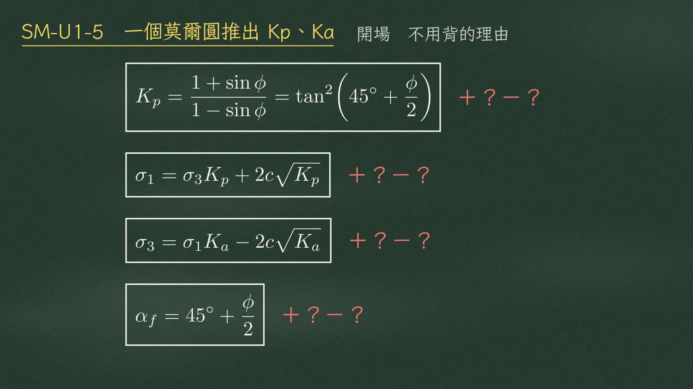
其實這四個公式都藏在同一張圖裡：一個圓、一條切線、一個直角三角形。圖畫對了，公式會自己跑出來。
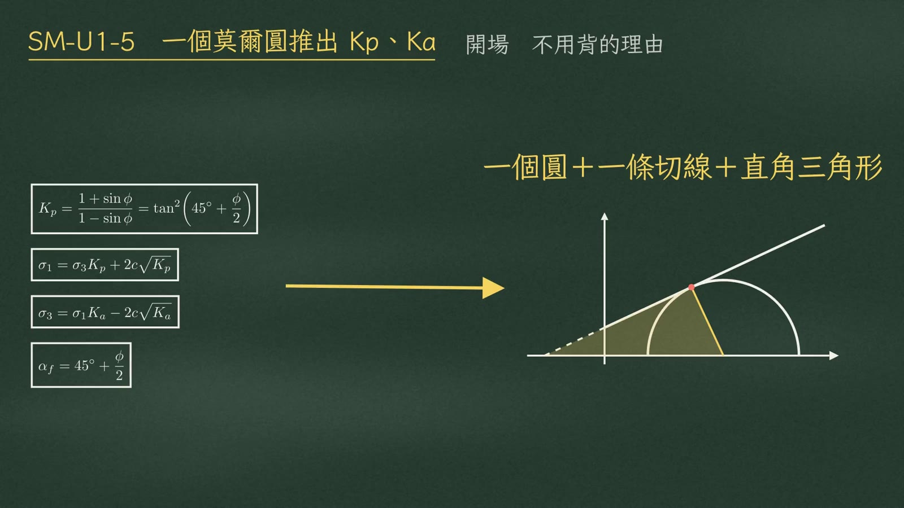
黑板配色：藍＝\(c\cot\phi\)、粉紅＝圓心座標 \(\frac{\sigma_1+\sigma_3}{2}\)、黃＝半徑 \(\frac{\sigma_1-\sigma_3}{2}\)；下方公式沿用同色。
第一步，畫座標。橫軸是正向應力，縱軸是剪應力。再畫莫爾庫倫破壞包絡線，截距是 \(c\)，斜率角是 \(\phi\)：
$$\tau=c+\sigma\tan\phi$$第二步，把包絡線往左延長，碰到橫軸的點叫 \(A\)。高度 \(c\)、斜率角 \(\phi\)，所以 \(A\) 到原點的距離是 \(c\) 除以 \(\tan\phi\)：
$$\overline{AO}=\frac{c}{\tan\phi}={\color{#2c7fa8}c\cot\phi}$$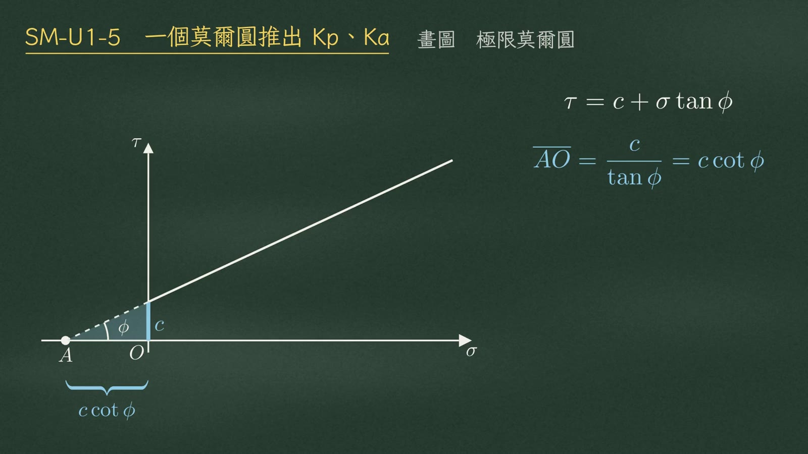
第三步，畫破壞時的莫爾圓。最小主應力 \(\sigma_3\) 在 \(E\)，最大主應力 \(\sigma_1\) 在 \(F\)。圓心 \(B\) 在兩者中間：
$$\text{圓心}={\color{#c2507a}\frac{\sigma_1+\sigma_3}{2}}\qquad \text{半徑}={\color{#b8962a}\frac{\sigma_1-\sigma_3}{2}}$$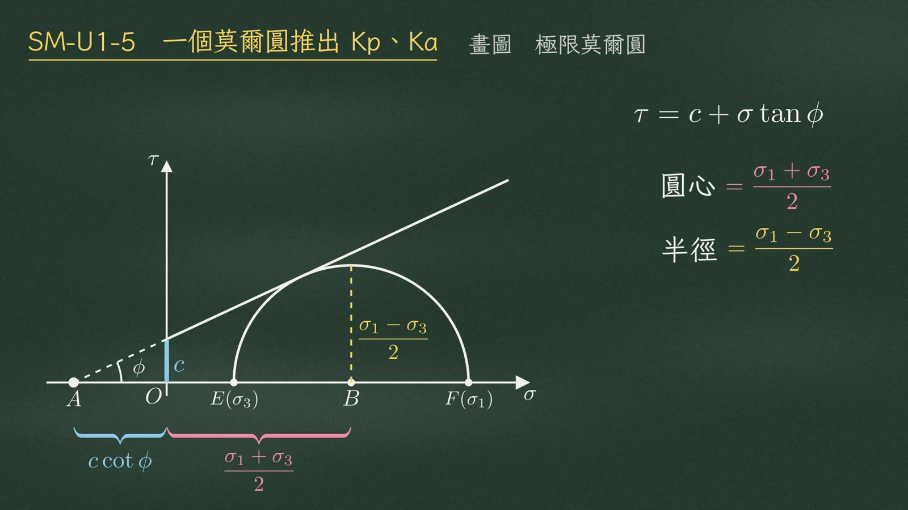
第四步，極限平衡的意思，就是這個圓剛好碰到包絡線，切點叫 \(D\)，這就是破壞點。幾何上有個一定成立的事實：半徑垂直切線。所以 \(BD\perp AD\)，\(A\)、\(B\)、\(D\) 三點圍出一個直角三角形 \(\triangle ABD\)。
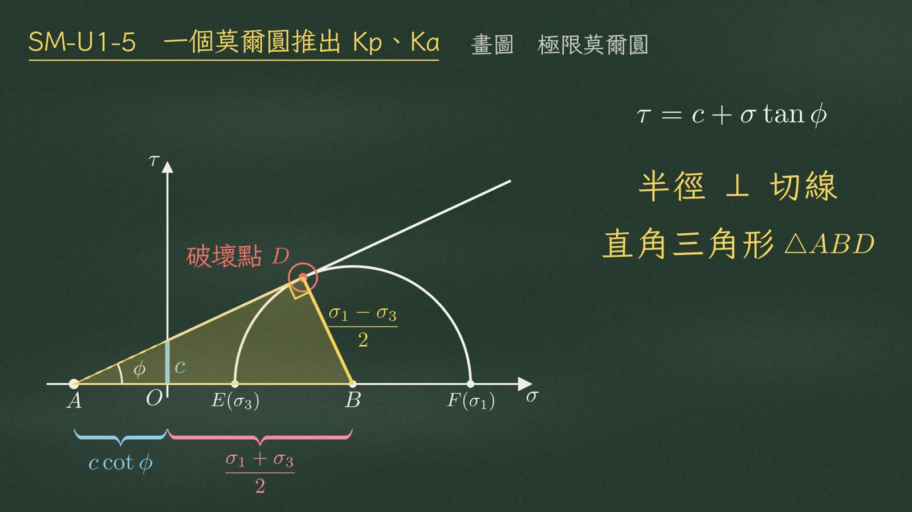
看這個直角三角形。\(A\) 點的角就是包絡線的斜率角 \(\phi\)。對邊 \(BD\) 是半徑，斜邊 \(AB\) 是 \(c\cot\phi\) 加上圓心座標。所以 \(\sin\phi\) 等於對邊除以斜邊：
$$\sin\phi=\frac{\overline{BD}}{\overline{AB}}=\frac{\color{#b8962a}\dfrac{\sigma_1-\sigma_3}{2}}{{\color{#2c7fa8}c\cot\phi}+{\color{#c2507a}\dfrac{\sigma_1+\sigma_3}{2}}}$$把兩邊都乘開、再乘二。注意 \(c\cot\phi\) 乘上 \(\sin\phi\)，剛好變成 \(c\cos\phi\)：
$$\sigma_1-\sigma_3=2c\cos\phi+(\sigma_1+\sigma_3)\sin\phi\qquad(c\cot\phi\cdot\sin\phi=c\cos\phi)$$把 \(\sigma_1\) 放左邊、\(\sigma_3\) 放右邊，同類項合併：
$$\boxed{\sigma_1(1-\sin\phi)=\sigma_3(1+\sin\phi)+2c\cos\phi}\qquad\text{母式 (a)}$$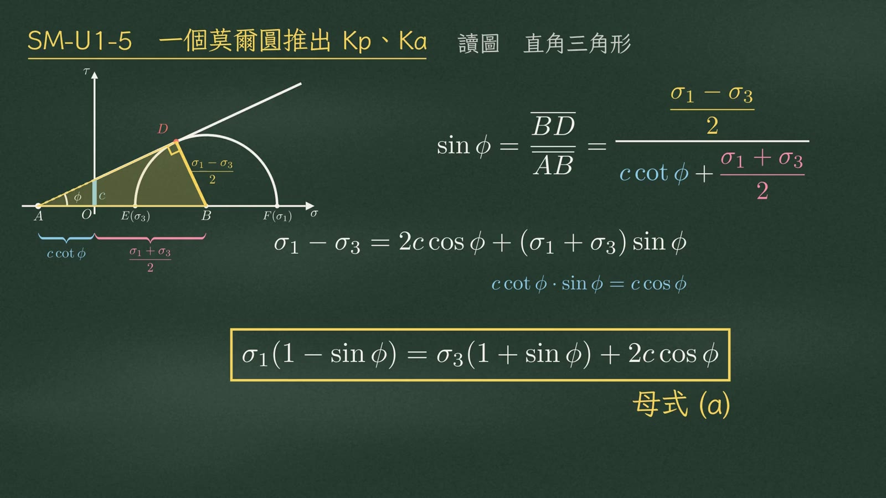
兩邊除以 \(1-\sin\phi\)：
$$\sigma_1=\sigma_3\,\frac{1+\sin\phi}{1-\sin\phi}+2c\,\frac{\cos\phi}{1-\sin\phi}$$\(\sigma_3\) 的係數 \(\dfrac{1+\sin\phi}{1-\sin\phi}\) 我們把它叫做 \(K_p\)。\(c\) 那一項呢？\(\cos\phi\) 可以寫成 \(\sqrt{(1+\sin\phi)(1-\sin\phi)}\)，約掉之後剛好是 \(\sqrt{K_p}\)：
$$\frac{\cos\phi}{1-\sin\phi}=\frac{\sqrt{(1+\sin\phi)(1-\sin\phi)}}{1-\sin\phi}=\sqrt{K_p}$$ $$\boxed{\sigma_1=\sigma_3K_p+2c\sqrt{K_p}}$$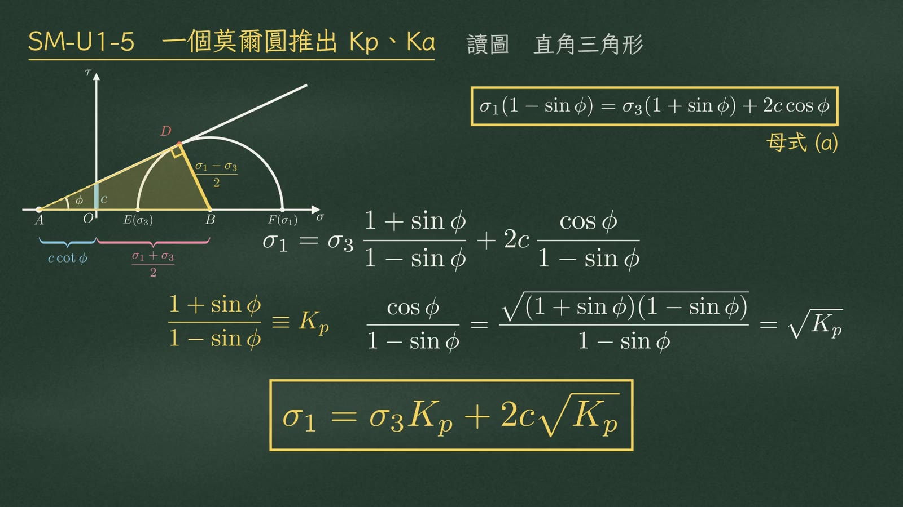
那 \(K_p\) 為什麼又等於 \(\tan^2(45^\circ+\phi/2)\)？不用背，用兩個倍角關係：
$$1+\cos2\theta=2\cos^2\theta\qquad 1-\cos2\theta=2\sin^2\theta$$把 \(\sin\phi\) 看成 \(\cos(90^\circ-\phi)\)，那麼 \(2\theta\) 就是 \(90^\circ-\phi\)，\(\theta\) 是 \(45^\circ-\phi/2\)：
$$\sin\phi=\cos(90^\circ-\phi),\qquad 2\theta=90^\circ-\phi\ \Rightarrow\ \theta=45^\circ-\frac{\phi}{2}$$「一加」除以「一減」，就是 \(\cot^2\)，也就是 \(\tan^2\)：
$$K_p=\frac{2\cos^2\theta}{2\sin^2\theta}=\cot^2\!\left(45^\circ-\frac{\phi}{2}\right)=\boxed{\tan^2\!\left(45^\circ+\frac{\phi}{2}\right)}$$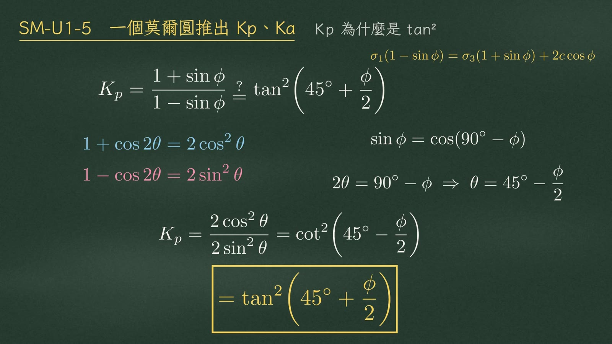
隨手驗算。
| 驗算 | 代入 | 結果 |
|---|---|---|
| 一 \(\phi=30^\circ\) | \(K_p=\dfrac{1+0.5}{1-0.5}=3\)；\(\tan^2 60^\circ=(\sqrt3)^2=3\) | ✓ 兩式相同 |
| 二 \(\phi=0\) | \(K_p=1\)，\(\sigma_1=\sigma_3+2c\)；\(\sigma_3=0\Rightarrow q_u=2c\) | ✓ 單壓強度＝2c |
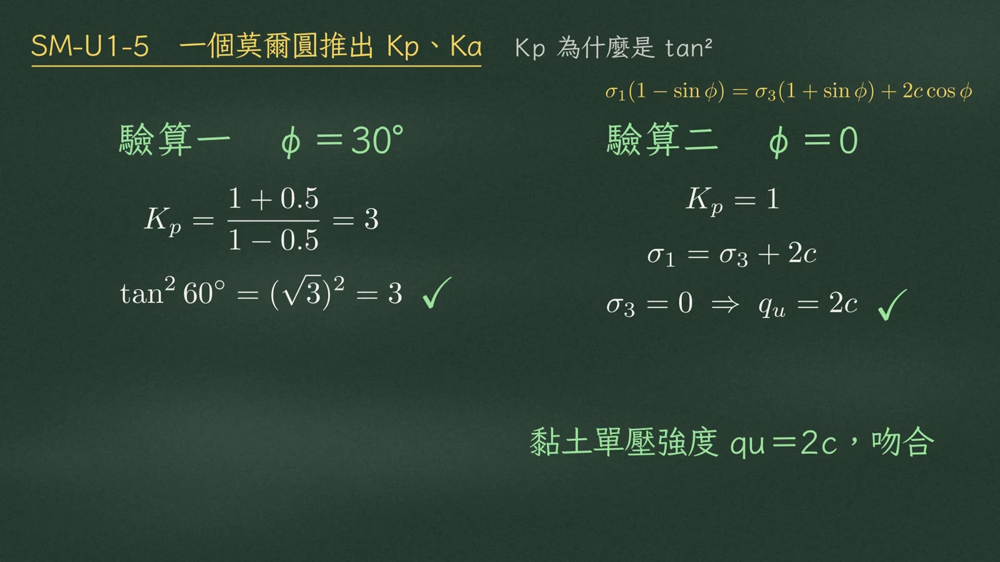
\(K_a\) 也不用另外記。回到母式，這次把 \(\sigma_3\) 留在左邊：
$$\sigma_3=\sigma_1\,\frac{1-\sin\phi}{1+\sin\phi}-2c\sqrt{\frac{1-\sin\phi}{1+\sin\phi}}$$這個比值就是 \(K_a\)，正好是 \(K_p\) 的倒數：
$$K_a=\frac{1-\sin\phi}{1+\sin\phi}=\frac{1}{K_p}=\tan^2\!\left(45^\circ-\frac{\phi}{2}\right)\qquad \boxed{\sigma_3=\sigma_1K_a-2c\sqrt{K_a}}$$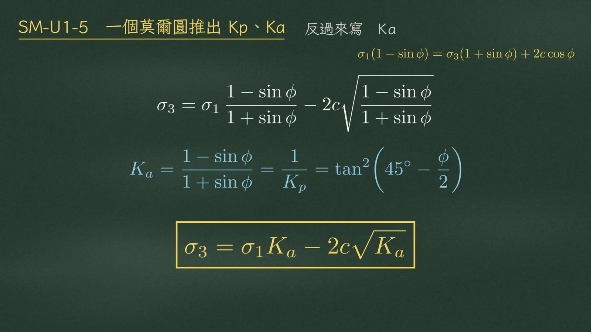
這就是 Rankine 土壓力：
| 狀態 | 牆的動向 | 水平應力 \(\sigma_h\) 是 | 公式 |
|---|---|---|---|
| 主動 | 牆往外走 | 小的 \(\sigma_3\) | \(\sigma_h=\sigma_vK_a-2c\sqrt{K_a}\) |
| 被動 | 牆推向土 | 大的 \(\sigma_1\) | \(\sigma_h=\sigma_vK_p+2c\sqrt{K_p}\) |
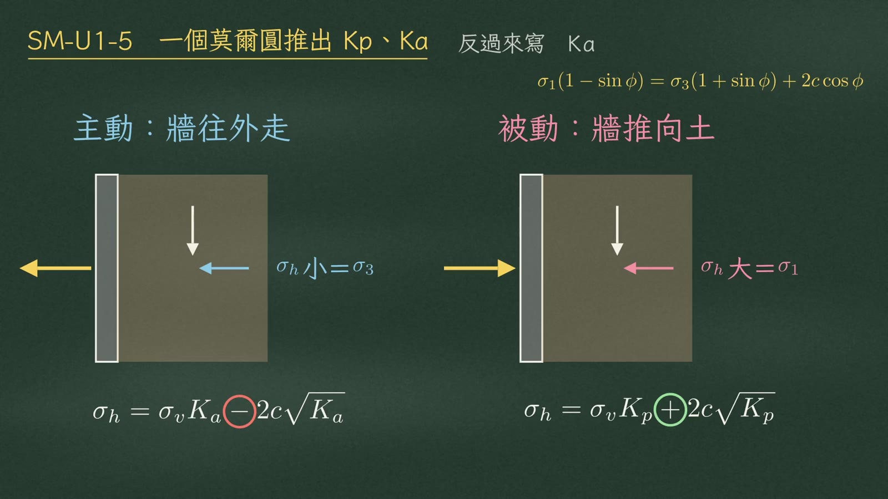
最後一個公式：破壞面的角度。\(\sigma_1\) 是垂直的，作用在水平面上；從 \(F\) 畫水平線，跟圓交在 \(E\)，所以 \(E\) 就是平面原點，也叫極點。從極點連到破壞點 \(D\)，\(\overline{ED}\) 這條線就是破壞面的方向。
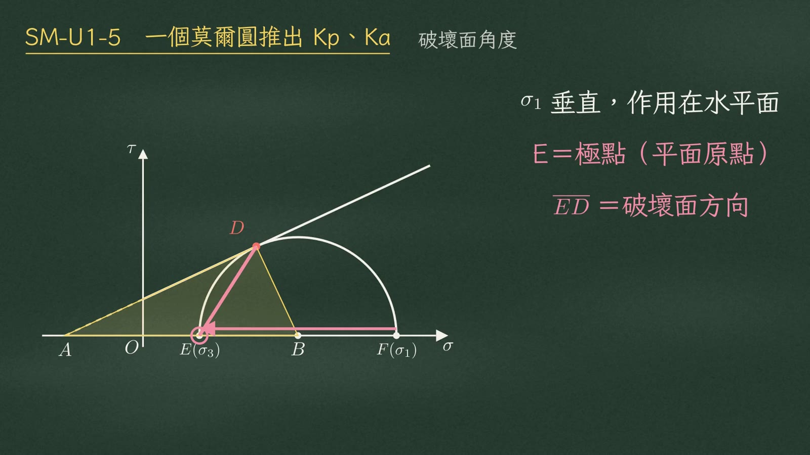
回到三角形 \(ABD\)：\(A\) 是 \(\phi\)，\(D\) 是 \(90^\circ\)，所以 \(B\) 角是 \(90^\circ-\phi\)；它的外角，也就是圓心角 \(\angle DBF\)，等於 \(90^\circ+\phi\)。圓周角 \(\angle DEF\) 對同一段弧，是圓心角的一半：
$$\angle ABD=180^\circ-90^\circ-\phi=90^\circ-\phi,\qquad \angle DBF={\color{#2c7fa8}90^\circ+\phi}$$ $$\boxed{\alpha_f=\frac{90^\circ+\phi}{2}=45^\circ+\frac{\phi}{2}}$$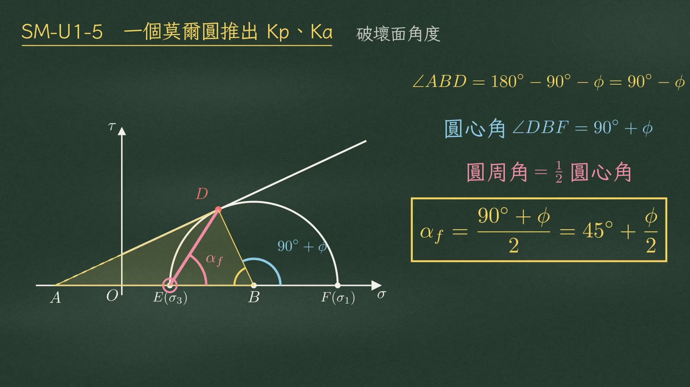
放回試體上看：破壞面和水平面，也就是大主應力面，夾 \(45^\circ+\phi/2\)。兩個共軛破壞面交成 X 形，\(\sigma_1\) 的方向把銳角平分，\(\sigma_3\) 的方向把鈍角平分。
| X 形夾角 | 角度 | 平分線方向 |
|---|---|---|
| 銳角 | \(90^\circ-\phi\) | \(\sigma_1\) |
| 鈍角 | \(90^\circ+\phi\) | \(\sigma_3\) |
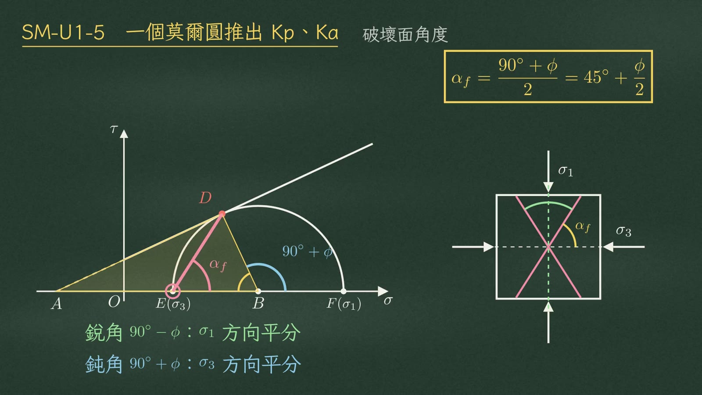
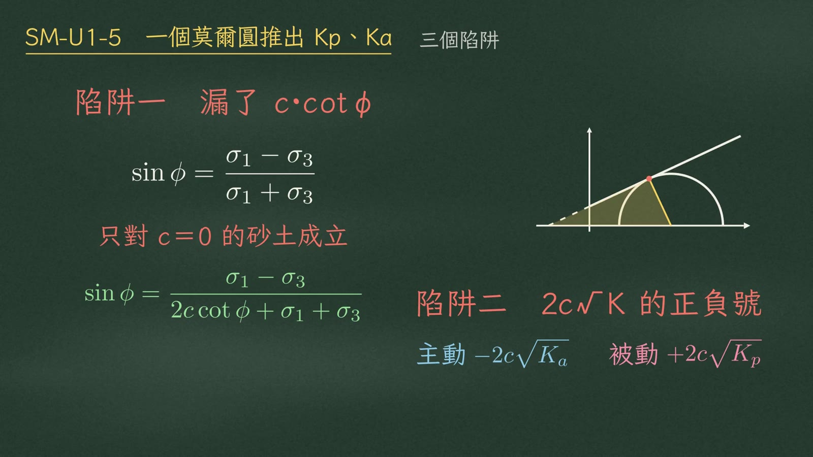
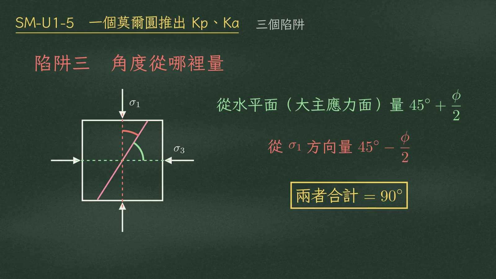
一張圖，四個公式，一個都不用背。
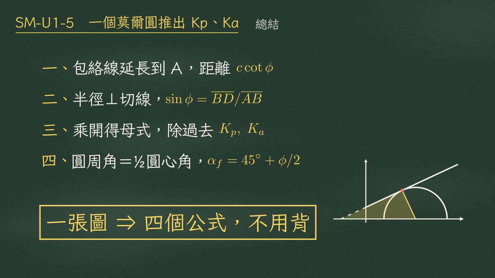